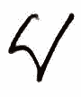
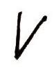
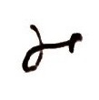
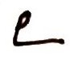
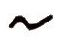
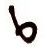
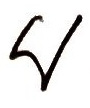

Durga
Uwaga!!!
Here’s my admonition content.1


Miód był  wykorzystywany w celach kulinarnych co najmniej od mezolitu.
{kind=link}
Jednakże inne produkty pszczele człowiek stosował do pielęgnacji, w sztuce oraz jako surowiec technologiczny prawdopodobnie od paleolitu. Najbardziej problematyczne jest to, że wszystkie te produkty nie pozostawiają po sobie żadnych śladów widocznych gołym okiem ani śladów uchwytnych mikroskopowo. Dopiero przy zastosowaniu metod lipidowych można uchwycić to, że pozostałości wyrobów pszczelich były wykorzystywane przez ludzi. Jeśli przechowywano je w naczyniach, które zachowały się do naszych czasów.
Ostrzeżenie
Uwaga!
Tables |
Are |
Cool |
|---|---|---|
col 1 is |
left-aligned |
$1600 |
col 2 is |
centered |
$12 |
col 3 is |
right-aligned |
$1 |
Niebezpieczeństwo
Nieprzespiecznie
kiedy |  jeżeli
{kind=link}
jeżeli  będzie  nie kiedy  raz  wtedy
{kind=link}
{kind=link}
{kind=link}
{kind=link}
jeżeli będzie nie kiedy raz wtedy
jeżeli
Trzeci poziom
Błąd
Błąd
Czwarty poziom
Ważne
Importante
{kind=link}
Informacja
Note
Zobacz także
Patrz też seealso
Ostrzeżenie
Warning
Na podstawie tego typu badań jesteśmy w stanie uchwycić występowanie materiału dotychczas uznawanego za nieuchwytny archeologicznie. Dodatkowo większość przedmiotów związanych z tradycyjnym pszczelarstwem w Europie także wykonywano z surowców organicznych, które rzadko zachowują się w kontekście archeologicznym. Należą do nich choćby ule, w tym tradycyjne dla niektórych rejonów zachodniej Europy skeps, czyli plecione ule, wykonywane najczęściej z wikliny.